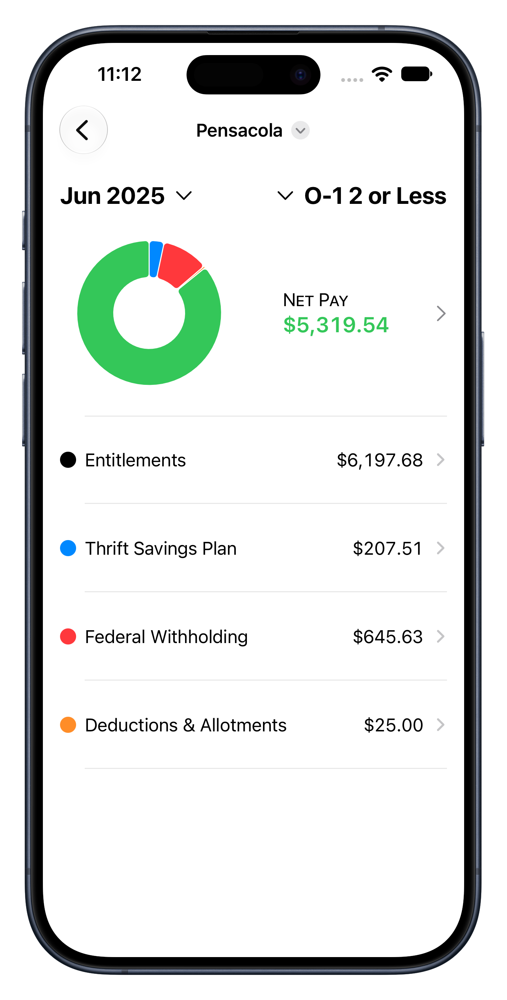
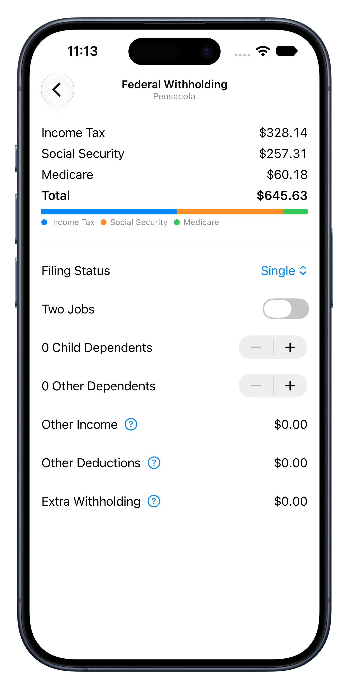

CHECKFIRE / SUPPORT
A little help.
A clearer paycheck.
Support for CheckFire, your iPhone tool for exploring monthly military pay, withholding, TSP contributions, and take-home estimates.
Get in touch Find an answer ↓

01 / QUICK ANSWERS
Make sense of your pay.
Start here for common questions and a few simple things to try.
How do I create a paycheck estimate?
Tap Add Paycheck, then choose its pay period, pay grade, and years of service. Open Entitlements to enter basic pay and add allowances, special pay, incentive pay, or bonuses. Configure TSP, federal withholding, deductions, and allotments from the paycheck detail screen.
Basic pay is entered manually. Selecting pay grade or years of service does not automatically fill in compensation.
Why does my estimate differ from my LES?
Check your pay period, basic pay, entitlement categories, W-4 selections, TSP percentages, deductions, and allotments against your Leave and Earnings Statement (LES). CheckFire models monthly amounts, not an individual midmonth or end-of-month payment.
CheckFire is an estimator. Year-to-date limits, payroll adjustments, eligibility rules, and other factors outside its scope can cause differences. Confirm actual compensation using official pay records.
How are taxes and TSP contributions estimated?
Federal withholding uses the selected year’s bundled tables and your withholding selections. Traditional TSP reduces modeled federal taxable wages; Roth TSP does not. Under CheckFire’s calculation model, only basic pay is used for Social Security and Medicare.
Social Security estimates do not apply the annual wage limit. Medicare estimates do not include Additional Medicare withholding. TSP calculations do not enforce annual contribution or catch-up limits. CheckFire does not calculate your final annual tax liability.
Why is the chart empty or net pay negative?
A new paycheck starts with zero basic pay. Open Entitlements and enter compensation to see a breakdown. If taxes, TSP contributions, deductions, and allotments together exceed entitlements, net pay can be negative; the app shows an alternate summary instead of a sector chart.
What should I check when entering an amount?
Use a nonnegative amount and your device’s decimal separator. Finish editing with the keyboard’s Done button, then check the displayed amount. Committed currency values are rounded to cents. Correct any validation message before leaving the screen.
Why is tax data unavailable for a year?
Tax tables are bundled with the app. The current source includes 2023–2026; older installed versions may include fewer years. Choose a supported year or check for an app update. These estimates are not a substitute for preparing a tax return.
Where are my paychecks stored, and how do I delete them?
Scenarios are saved locally on your device. Delete individual scenarios or use Settings → Delete All Data. The developer cannot retrieve your saved paychecks. Deleting the app removes local data; offloading may retain it. Device backups may also contain saved information. Read the privacy policy for details.
How do I report a bug or suggest a feature?
Email labs@thefoxrun.net or open a GitHub issue. Include the app version, iOS version, device model, reproduction steps, and expected behavior. For calculation issues, include the tax year and an anonymized example.
GitHub issues are public. Do not post an unredacted LES, Social Security number, banking information, or other sensitive details.
02 / DIRECT SUPPORT
Still need a hand?
Contact Ryan Clarke at Fox Run Labs for CheckFire support, feedback, feature requests, or privacy questions.
labs@thefoxrun.netHelpful details: app version, iOS version, device model, and steps to reproduce the issue. Screenshots can help—please remove names, identifying numbers, banking details, and any financial information you do not want to share.
Your privacy, explained.
Understand paycheck storage, backups, and support correspondence.
Read the privacy policy ↗